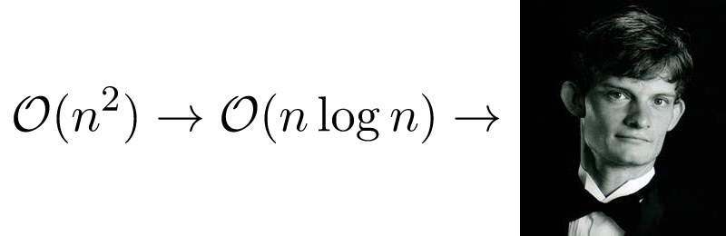

Availible as a tutor for High School or lower computer science, mathematics, or bassoon playing.

Greetings, my name is Bryce Summers and I've studies computer science and bassoon playing for over 10 years.
Expertise
- Computer graphics: OpenGL, WebGL, ray-tracing, rendering
- Programming languages, simple compilers.
- Computational mathematics: geometry, algebra, linear algebra, optimization
- Bassoon Playing
Past creative work